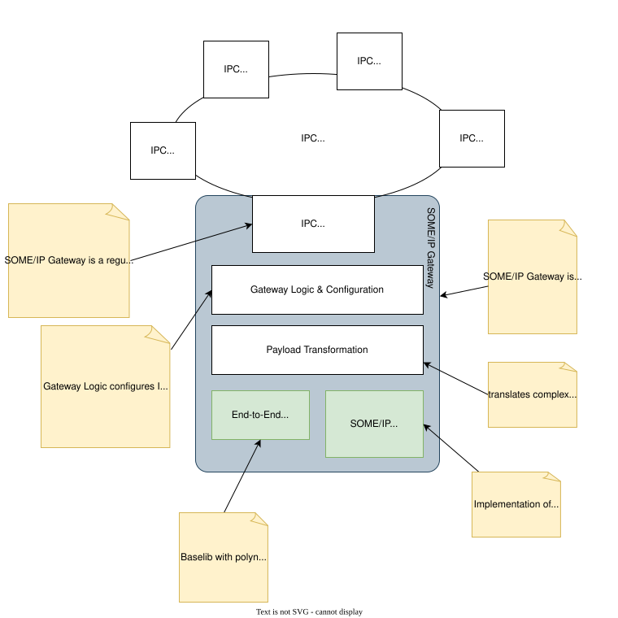
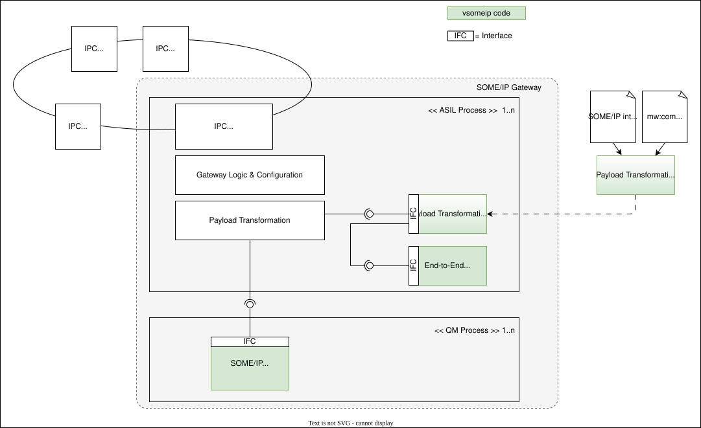
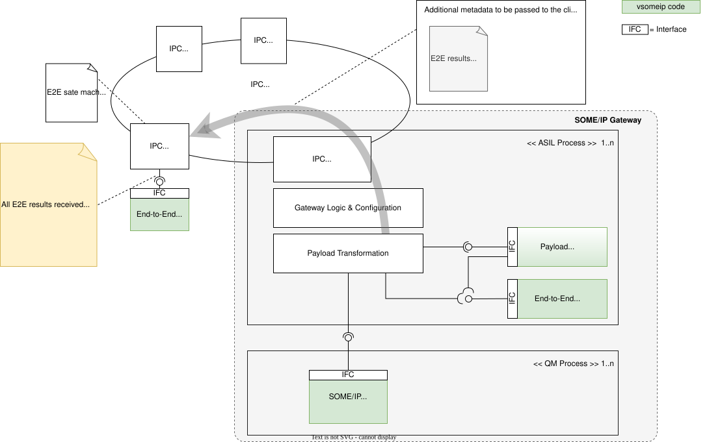
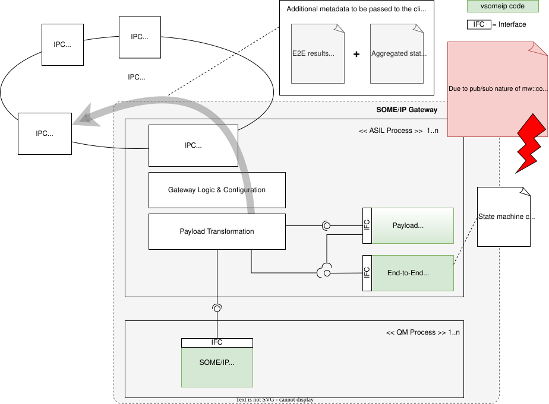

SOME/IP Gateway Architecture#
Context View#
SOME/IP Gateway on one side is a regular participant in IPC and uses the according mechanisms to publish data or to subscribe to data. As such it will need to know and understand the data types that are used in the IPC network.
It also is a participant in the SOME/IP network and provides services for the service oriented communication. This functionality is enabled through the inclusion of the vsomeip stack, which is based on the publicly released Open SOME/IP Specification and serves as a reference implementation that may be substituted with alternative solutions, including proprietary commercial SOME/IP stacks.
There need to be some components between the two communication networks as data types and their according representations and transmission cadence can be different. Translation of data types could be handled in some translation module that might be independent of the rest of the gateway. But buffering / queuing of messages, events, signals should be mostly freely programmable by integrators using the SOME/IP gateway.

Fig. 5 General overview of SOME/IP Gateway#
Structural View#
SOME/IP stacks as supplied by different vendors mostly are available as QM only. In the case that SOME/IP implementations are not developed under ASIL-B constraints, adequate measures need to be taken to separate this QM component from the otherwise ASIL-B compliant components. This may be achieved through separate processes, which again will require dedicated inter-process-communication between the SOME/IP-stack and the rest of the gateway. It is preferred to avoid such additional IPC.

Fig. 6 Detailed components view of SOME/IP Gateway#
E2E Considerations#
To cope with SOME/IP stack just being QM, we need to prepare for end-to-end protection. The goal shall be to do the E2E protection/check as centrally as possible in the gateway. Unfortunately, the centralized end-to-end check cannot be done for all relevant E2E properties. The following table proposes where the corresponding E2E properties shall checked.
Protection Property |
Purpose |
Gateway |
IPC Client |
|---|---|---|---|
CRC |
Detects data corruption in the payload and metadata. |
x |
|
Counter |
Detects message loss, duplication, or reordering. |
x |
x |
Alive Counter |
Detects if the sender is still active or stuck/frozen |
x |
x |
Data ID |
Identifies the data format version to prevent misinterpretation. |
x |
|
Timeout |
Detects if no message is received within a defined time window. |
x |
E2E Design and Interface Considerations#
As mentioned above, not all E2E checks can be kept hidden within the gateway. For some problems it is up to the application to decide whether it is still valuable to access and process the data. This is in particular true for duplication or re-ordering issues. Therefore, it is required to pass a tupel consisting of the payload data as well as supplementary E2E metadata and error information to the IPC clients to enable the client to individually judge on particular E2E issues.
The API design needs to put the payload information as well as the additional E2E metadata as close as possible together to easily enable and motivate clients to consequently check for potential errors.
Additional metadata and error information needs to be incorporated into regular mw::com user interface
Error related interface design needs to be highly optimized for the “good case” to have an optimized support for the common IPC case
Assumptions of Use need to be provided to force the user to check for the (E2E-) result
Additional E2E metadata to be handed over to the clients:
Counter, slightly different interpretation depending on profile, n/a in case the profile doesn’t support it
Data ID, n/a in case the profile does not support it or if the Data ID is not explicitly transmitted like in profile 22
Profile identification, required to properly interpret E2E attributes like “Counter”. (Could be either an “Alive Counter” or a “Sequence Counter” depending on the profile)
Detailed, profile specific error code (enum)
Proposed Error Enumeration
No E2E error
CRC Error
Sequence error (further sub-qualification in loss, duplication, reordering is up to the client based on the counter)
Note
CRC Errors might cause problems with corrupted service / instance IDs, as such messages might not get forwarded to the correct recipient. This requires further discussion during implementation phase.
Note
The proposed error enumeration is an abstraction. Deriving detailed errors based on the E2E metadata is task of the client. For reference, this is the typical error enumeration:
OK
ERROR
OKSOMELOST
REPEATED
WRONGSEQUENCE
NONEWDATA
SYNC
INITIAL
E2E State Machine Considerations#
The E2E (End-to-End) state machine provides a summarized result about the overall health and state of a communication channel. Unlike individual E2E Profile Check() functions, which assess data validity for a single communication cycle, the state machine aggregates results from multiple Check() function invocations over a period. This allows it to determine a more holistic and debounced status of the communication.
Purpose of the E2E State Machine#
The primary purpose of the E2E state machine is to transform instantaneous “per-cycle” check results into a stable, long-term communication channel status. This aggregated status is then provided to the consuming application, enabling it to make informed decisions about whether the received data can be trusted and used for safety-related functions.
As mentioned above, the E2E state-machine is associated to one communication channel which is in turn associated to exactly one individual IPC client. Therefore it is an obvious consequence, that the individual state machine handling and state machine configuration is responsibility of the client and not a central responsibility of the gateway. Even for the same service different clients may use different state machine configuration. The diagram below outlines this distribution of responsibilities.
Diagram: E2E state machine responsibility associated to IPC client

Fig. 7 E2E state machine responsibility associated to IPC client#
Considered Alternative If we allocate the state-machine responsibility to the gateway the distribution of responsibilities would look like in the following diagram
Diagram: E2E state machine responsibility associated to the gateway

Fig. 8 E2E state machine responsibility associated to the gateway#
Due to pub/sub nature of mw::com, clients listening on the same topic cannot be separately addressed. Therefore, the state machine results cannot be selectively distributed according to the particular communication channel they belong to.
=> Alternative dismissed
Note
The End-to-End consideration in this chapter do not yet consider methods.